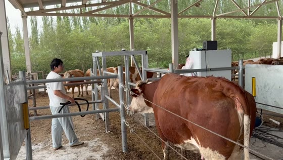
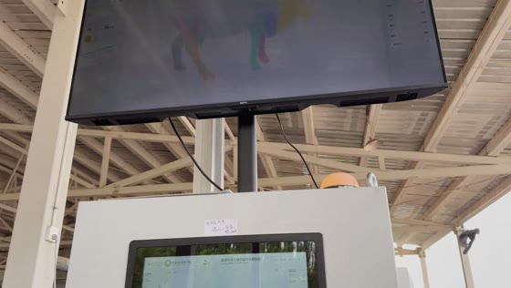
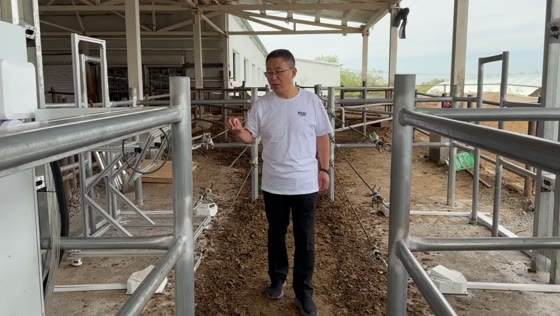

全部素材关键帧
显示 170 / 170 段视频
IMG_9174.MP4 已人工复核为内容正常。IMG_9367.MP4 中长时间出镜讲解者已确认为华中农业大学信息学院李院长。
超短元件连续预览
将保留的超短元件素材按文件顺序连续播放，便于判断其作为零件特写的使用价值。
正在载入素材索引关键帧与结构化理解即将呈现



显示 170 / 170 段视频
将保留的超短元件素材按文件顺序连续播放，便于判断其作为零件特写的使用价值。